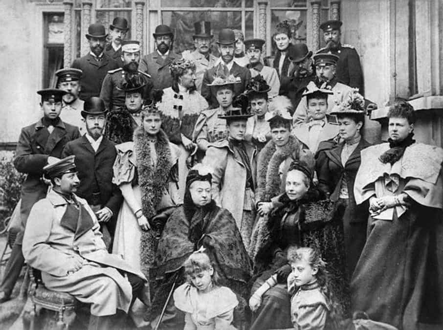
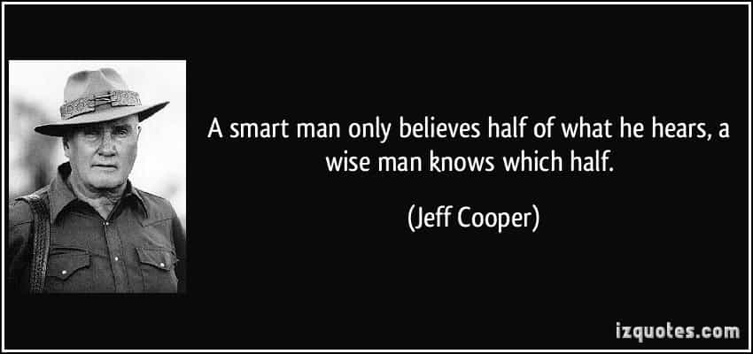

Young and dumb, that’s how people describe their early selves as a reckless man lacking any wisdom or experience. As we get older we start having flashbacks of our young days. Then we scratch our heads thinking what decisions could’ve been done better or simply avoided.
Some of them you might have heard before or consider it common sense. Nevertheless I still think they are worth mentioning.
I used to think that gaming the popular hot girl, that everyone wanted to be around or date was the right thing to do. How deeply wrong was I. Under those attractive physical features lies a insecure, shallow attention whore, who will ditch you if you ever go through a difficult period in your life. These chicks are never worth the trouble. Most of them will only love you, while you are useful in their narcissistic quest for popularity.
You are better off finding a girl, who loves you for who you really are not for your belongings or reputation, even if she is not as smoking hot as the “Trixie”.

Your parents, that special uncle, your best friend or a girlfriend that you thought you could count on—all of them sooner or later are going to end up disappointing you. They might not approve of what you are becoming or goals but that doesn’t mean they don’t love you. Nobody is perfect including me and you, fellow reader. Learn to love them for their best qualities and forgive them for their flaws.
I can count on my fingers the friendships that lasted for my entire life, even when I was no longer valuable to them or distance made it difficult for us to keep in touch. Who you consider your “friends” today might be nothing but a distant memory of your past in a few decades from now.
Most people that you will encounter in your local community, school, college, or work will only be your friends while your guys have something in common or circumstances make your guys cross-paths frequently.
“How are you doing?” This is a common phrase we are tired of hearing when someone greet us. The irony lies in the fact that when people use it, they don’t really want to hear about your problems or background. It’s just a way to not come off as a total rude jerk and appear hospitable. Learn to deal with your problems on your own don’t expect anyone to feel sorry for you nor to help you out.

“Game” is not only for girls but for everything in life. Everyone is gaming, deep down we all know, that if you show your true intentions to others early on, you are not going to get very far in life. Life itself is a game in order for you to win you can’t give away your final goal. Life is a game itself.
A lot of men are insecure about showing their true intentions to girls they have the hots for. I was no exception to this. This kind of behavior is very harmful, not only it will kill attraction, but you will also be labeled as a beta. The best way to cure it is by going for as many “No!” as you can, until you don’t care anymore. It will give you more experience and help you overcome the soulmate myth.
It’s quite clear that if you succeed at something “ too much,” you might end up drawing too much attention. In case you become a big shot, get ready for the big sharks trying to crush you. It’s a sad reality, but the truth is most people are insecure and will hate on you just for seeing you realizing your dreams while they stay idle. You are better off to hiding your “smartness” until you are certain enough that you can show them to someone you can trust. Otherwise, crabs will try to pull you back inside the bucket.
Unfortunately I had to learn this the hard way. It was only after I got negative attention with people trying to take me down or destroy my frame that I finally realized I had to hide my opinions and talents to most people. You can only show who you really are to those you can trust your life upon.
Life throws a lot of unpleasant experiences our way and most of the time we don’t know the best way to react, especially when we are young and naive about the world and those around us. I hope this article will help you to reflect about your past and take some of my advice to help you not to make the same mistakes I did in my youth.
Read More: It’s Easier To Shine When You’re Younger